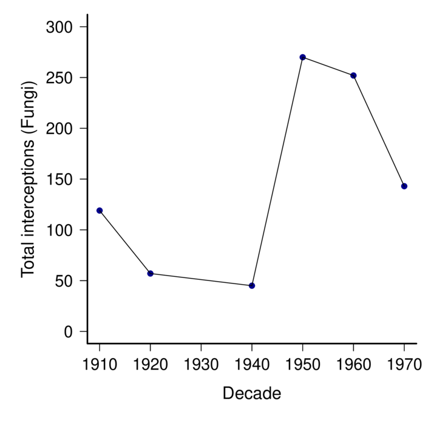
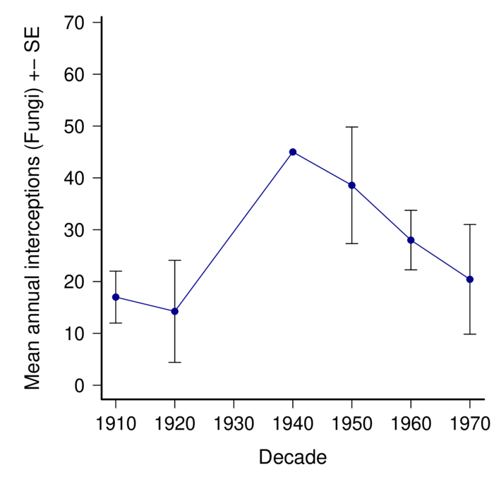
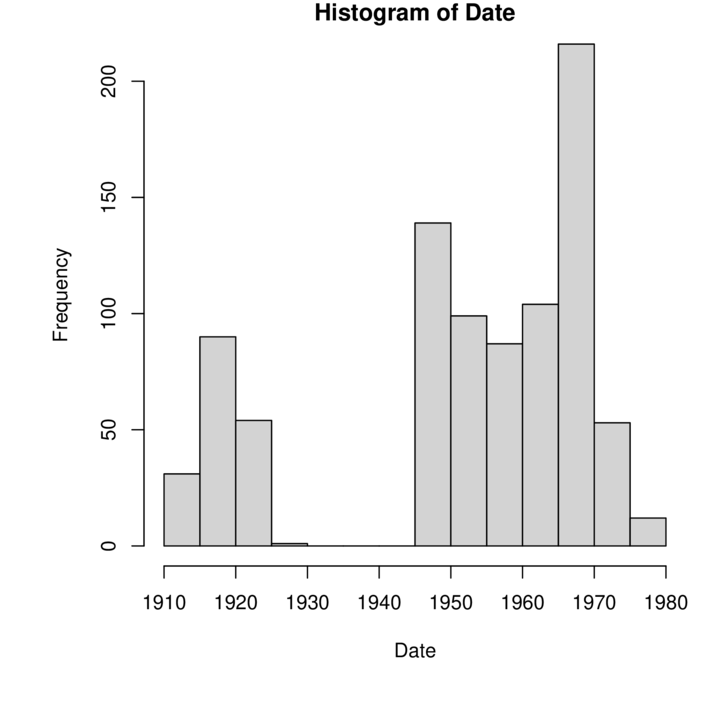

This is a very first cut of the fungal interceptions data. It's pretty clean, but there are likely still issues with synonomy. Some have been detected and fixed already but I haven't systematically gone through to see how thorough that is. There is a lot more that could be done (even with these data) but including and comparing with data from the 1980- would add a lot for sure.
Edited: JGarnas_2024.01.13
By kingdom and decade of interception
So, WAY more arthropods. only 231 total fungal detections. Consider whether this is enough to do anything with. Perhaps the story is that visual inspection is sorely inadequate.
| Actinobacteriota | Annelida | Arthropoda | Ascomycota | Basidiomycota | Chordata | Foraminifera | Mollusca | Nematoda | Oomycota | Proteobacteria | Tracheophyta | ||
|---|---|---|---|---|---|---|---|---|---|---|---|---|---|
| 278 | 0 | 0 | 0 | 0 | 0 | 0 | 0 | 0 | 0 | 0 | 0 | 0 | |
| Animalia | 7 | 0 | 4 | 2822 | 0 | 0 | 1 | 0 | 55 | 14 | 0 | 0 | 0 |
| Bacteria | 5 | 1 | 0 | 0 | 0 | 0 | 0 | 0 | 0 | 0 | 0 | 1 | 0 |
| Chromista | 0 | 0 | 0 | 0 | 0 | 0 | 0 | 1 | 0 | 0 | 2 | 0 | 0 |
| Fungi | 0 | 0 | 0 | 0 | 221 | 10 | 0 | 0 | 0 | 0 | 0 | 0 | 0 |
| Plantae | 0 | 0 | 0 | 0 | 0 | 0 | 0 | 0 | 0 | 0 | 0 | 0 | 5 |
By kingdom and phylum
| Animalia | Bacteria | Chromista | Fungi | Plantae | ||
|---|---|---|---|---|---|---|
| 278 | 7 | 5 | 0 | 0 | 0 | |
| Actinobacteriota | 0 | 0 | 1 | 0 | 0 | 0 |
| Annelida | 0 | 4 | 0 | 0 | 0 | 0 |
| Arthropoda | 0 | 2822 | 0 | 0 | 0 | 0 |
| Ascomycota | 0 | 0 | 0 | 0 | 221 | 0 |
| Basidiomycota | 0 | 0 | 0 | 0 | 10 | 0 |
| Chordata | 0 | 1 | 0 | 0 | 0 | 0 |
| Foraminifera | 0 | 0 | 0 | 1 | 0 | 0 |
| Mollusca | 0 | 55 | 0 | 0 | 0 | 0 |
| Nematoda | 0 | 14 | 0 | 0 | 0 | 0 |
| Oomycota | 0 | 0 | 0 | 2 | 0 | 0 |
| Proteobacteria | 0 | 0 | 1 | 0 | 0 | 0 |
| Tracheophyta | 0 | 0 | 0 | 0 | 0 | 5 |
By kingdom and decade of interception
What's up with the missing decades for fungi? Great Depression/WWII impacts on inspection, or just vagaries of reporting?
| Kingdom/Decade | 1910 | 1920 | 1930 | 1940 | 1950 | 1960 | 1970 | 1980 |
|---|---|---|---|---|---|---|---|---|
| z_Not listed | 1 | 2 | 3 | 8 | 10 | 4 | 12 | 7 |
| Animalia | 306 | 3439 | 2237 | 2392 | 3376 | 4894 | 6658 | 11885 |
| Bacteria | 35 | 243 | 4 | 0 | 0 | 0 | 0 | 0 |
| Chromista | 0 | 0 | 0 | 0 | 3 | 2 | 0 | 0 |
| Fungi | 18 | 157 | 1 | 0 | 209 | 220 | 261 | 20 |
| Plantae | 0 | 5 | 0 | 0 | 1 | 0 | 0 | 6 |
FUNGI only from here
nearly all ascomycota (where most plant pathogens sit).
At first look there are some pathogen groups listed, though I still have to look at species.
Even at the genus level, detections are low and sporadic.
| 1910 | 1920 | 1940 | 1950 | 1960 | 1970 | |
|---|---|---|---|---|---|---|
| Ascomycota, , Achorella | 0 | 0 | 0 | 1 | 0 | 0 |
| Ascomycota, , Acremoniella | 1 | 0 | 0 | 0 | 0 | 0 |
| Ascomycota, , Ascochyta | 0 | 0 | 0 | 1 | 0 | 0 |
| Ascomycota, , Bactridium | 0 | 1 | 0 | 0 | 0 | 0 |
| Ascomycota, , Botryodiplodia | 0 | 1 | 0 | 0 | 0 | 0 |
| Ascomycota, , Camarosporium | 0 | 0 | 0 | 1 | 3 | 1 |
| Ascomycota, , Cephalosporium | 1 | 2 | 0 | 0 | 0 | 0 |
| Ascomycota, , Cephalothecium | 2 | 2 | 0 | 0 | 0 | 0 |
| Ascomycota, , Chaetodiplodia | 3 | 0 | 0 | 0 | 0 | 0 |
| Ascomycota, Apiosporaceae, Apiospora | 0 | 0 | 0 | 2 | 1 | 0 |
| Ascomycota, Apiosporaceae, Arthrinium | 0 | 0 | 0 | 1 | 0 | 1 |
| Ascomycota, Aspergillaceae, Aspergillus | 28 | 11 | 0 | 1 | 0 | 0 |
| Ascomycota, Asterinaceae, Asterina | 0 | 0 | 0 | 1 | 0 | 0 |
| Ascomycota, Botryosphaeriaceae, Botryosphaeria | 0 | 0 | 0 | 1 | 2 | 0 |
| Ascomycota, Botryosphaeriaceae, Microdiplodia | 0 | 0 | 0 | 0 | 1 | 0 |
| Ascomycota, Botryosphaeriaceae, Neofusicoccum | 0 | 0 | 1 | 4 | 0 | 0 |
| Ascomycota, Calcarisporiaceae, Calcarisporium | 0 | 0 | 0 | 0 | 1 | 0 |
| Ascomycota, Ceratocystidaceae, Ceratocystis | 0 | 0 | 0 | 0 | 2 | 0 |
| Ascomycota, Ceratocystidaceae, Chalaropsis | 0 | 0 | 0 | 1 | 0 | 0 |
| Ascomycota, Ceratocystidaceae, Endoconidiophora | 0 | 0 | 0 | 0 | 1 | 0 |
| Ascomycota, Ceratocystidaceae, Thielaviopsis | 0 | 0 | 0 | 0 | 1 | 0 |
| Ascomycota, Chaetomiaceae, Chaetomium | 5 | 1 | 1 | 0 | 0 | 0 |
| Ascomycota, Chaetosphaeriaceae, Pseudolachnella | 0 | 0 | 0 | 0 | 1 | 0 |
| Ascomycota, Clavicipitaceae, Aschersonia | 0 | 0 | 0 | 1 | 0 | 0 |
| Ascomycota, Clavicipitaceae, Hypocrella | 0 | 0 | 0 | 1 | 0 | 0 |
| Ascomycota, Coryneliaceae, Caliciopsis | 0 | 0 | 0 | 0 | 0 | 2 |
| Ascomycota, Diaporthaceae, Phomopsis | 0 | 0 | 0 | 0 | 6 | 0 |
| Ascomycota, Didymellaceae, Ascochyta | 2 | 0 | 2 | 7 | 39 | 21 |
| Ascomycota, Didymellaceae, Boeremia | 0 | 0 | 0 | 0 | 1 | 0 |
| Ascomycota, Didymellaceae, Cerebella | 0 | 1 | 0 | 0 | 0 | 0 |
| Ascomycota, Didymellaceae, Didymella | 0 | 0 | 3 | 16 | 4 | 0 |
| Ascomycota, Didymellaceae, Epicoccum | 0 | 0 | 0 | 12 | 0 | 0 |
| Ascomycota, Didymellaceae, Stagonosporopsis | 0 | 0 | 0 | 1 | 0 | 0 |
| Ascomycota, Hypocreaceae, Acrostalagmus | 2 | 4 | 0 | 0 | 0 | 0 |
| Ascomycota, Melanconidaceae, Prosthecium | 0 | 0 | 0 | 1 | 0 | 0 |
| Ascomycota, Melanommataceae, Camposporium | 0 | 0 | 0 | 0 | 1 | 0 |
| Ascomycota, Meliolaceae, Amazonia | 0 | 0 | 0 | 0 | 0 | 1 |
| Ascomycota, Micropeltidaceae, Chaetothyrina | 0 | 0 | 0 | 0 | 15 | 31 |
| Ascomycota, Microthyriaceae, Asterinella | 0 | 0 | 0 | 1 | 0 | 0 |
| Ascomycota, Microthyriaceae, Maublancia | 0 | 0 | 0 | 1 | 0 | 0 |
| Ascomycota, Mycosphaerellaceae, Asperisporium | 0 | 0 | 0 | 5 | 0 | 0 |
| Ascomycota, Mycosphaerellaceae, Cercospora | 1 | 0 | 3 | 20 | 55 | 42 |
| Ascomycota, Mycosphaerellaceae, Cercosporella | 0 | 0 | 0 | 1 | 2 | 0 |
| Ascomycota, Mycosphaerellaceae, Chuppomyces | 0 | 0 | 3 | 7 | 0 | 0 |
| Ascomycota, Mycosphaerellaceae, Clarohilum | 0 | 0 | 0 | 1 | 0 | 0 |
| Ascomycota, Mycosphaerellaceae, Mycosphaerella | 0 | 0 | 17 | 48 | 0 | 1 |
| Ascomycota, Mycosphaerellaceae, Nothopassalora | 0 | 0 | 0 | 1 | 0 | 0 |
| Ascomycota, Mycosphaerellaceae, Passalora | 5 | 0 | 0 | 5 | 10 | 0 |
| Ascomycota, Mycosphaerellaceae, Pluripassalora | 0 | 0 | 0 | 0 | 4 | 0 |
| Ascomycota, Mycosphaerellaceae, Pseudocercospora | 0 | 0 | 3 | 43 | 55 | 14 |
| Ascomycota, Mycosphaerellaceae, Rosisphaerella | 0 | 0 | 0 | 2 | 0 | 0 |
| Ascomycota, Mycosphaerellaceae, Scolecostigmina | 0 | 0 | 0 | 2 | 4 | 0 |
| Ascomycota, Mycosphaerellaceae, Sphaerulina | 0 | 0 | 1 | 2 | 0 | 0 |
| Ascomycota, Myrotheciomycetaceae, Trichothecium | 2 | 7 | 0 | 0 | 0 | 0 |
| Ascomycota, Nectriaceae, Allantonectria | 0 | 0 | 0 | 1 | 0 | 0 |
| Ascomycota, Ophiostomataceae, Ophiostoma | 0 | 0 | 0 | 0 | 1 | 1 |
| Ascomycota, Ophiostomataceae, Sporothrix | 0 | 0 | 0 | 3 | 0 | 0 |
| Ascomycota, Orbiliaceae, Arthrobotrys | 0 | 0 | 0 | 1 | 0 | 0 |
| Ascomycota, Phacidiaceae, Allantophomopsis | 0 | 0 | 0 | 1 | 0 | 0 |
| Ascomycota, Phaeochoraceae, Phaeochoropsis | 0 | 0 | 0 | 2 | 1 | 0 |
| Ascomycota, Phyllachoraceae, Coccodiella | 0 | 0 | 0 | 0 | 2 | 0 |
| Ascomycota, Phyllachoraceae, Coccostromopsis | 0 | 0 | 0 | 1 | 0 | 0 |
| Ascomycota, Pleosporaceae, Alternaria | 12 | 1 | 2 | 28 | 8 | 0 |
| Ascomycota, Sclerotiniaceae, Botryotinia | 13 | 0 | 0 | 15 | 1 | 0 |
| Ascomycota, Sclerotiniaceae, Botrytis | 41 | 24 | 9 | 21 | 0 | 0 |
| Ascomycota, Seuratiaceae, Seuratia | 0 | 0 | 0 | 1 | 0 | 0 |
| Ascomycota, Trichosphaeriaceae, Nigrospora | 1 | 1 | 0 | 0 | 0 | 0 |
| Ascomycota, Venturiaceae, Coleroa | 0 | 0 | 0 | 0 | 5 | 0 |
| Ascomycota, Xylariaceae, Anthostomella | 0 | 0 | 0 | 2 | 1 | 0 |
| Basidiomycota, , Aecidium | 0 | 0 | 0 | 0 | 2 | 1 |
| Basidiomycota, Chaconiaceae, Chaconia | 0 | 0 | 0 | 0 | 1 | 2 |
| Basidiomycota, Phakopsoraceae, Bubakia | 0 | 0 | 0 | 0 | 13 | 12 |
| Basidiomycota, Phakopsoraceae, Cerotelium | 0 | 1 | 0 | 1 | 8 | 13 |
| Basidiomycota, Phakopsoraceae, Phakopsora | 0 | 0 | 0 | 1 | 0 | 0 |
total_interceptions_fungi
Caption:

01_total_interceptions_fungi.pdf
Script file:
./interceptions_amyric/01_dataImport.r Timestamp: Fri Dec 22 09:27:15 2023
Notes:
02_mean_annual_interceptions_fungi.pdf.annot.md.annot.md
mean_annual_interceptions_fungi
Caption:

02_mean_annual_interceptions_fungi.pdf
Script file:
./interceptions_amyric/01_dataImport.r Timestamp: Fri Dec 22 09:53:01 2023
Notes:
histogram_by_year
Caption:

03_histogram_by_year.pdf
Just a few more graphs/tables -- this is all preliminary
Cumulative detections, all fungi
Caption:

04_cumulativedetections_fungi.pdf
Detections by decade and country:
Sorted by ALLDECADES
| Origin | 1910 | 1920 | 1940 | 1950 | 1960 | 1970 | alldecades |
|---|---|---|---|---|---|---|---|
| Mexico | 1 | 2 | 7 | 79 | 41 | 15 | 145 |
| Netherlands | 30 | 15 | 2 | 19 | 1 | 0 | 67 |
| Japan | 3 | 2 | 6 | 29 | 18 | 8 | 66 |
| Colombia | 5 | 1 | 1 | 6 | 24 | 13 | 50 |
| Ecuador | 7 | 1 | 1 | 4 | 9 | 6 | 28 |
| Guatemala | 4 | 1 | 1 | 5 | 10 | 6 | 27 |
| Panama | 0 | 1 | 2 | 8 | 13 | 2 | 26 |
| Dominican Republic | 0 | 0 | 1 | 2 | 12 | 10 | 25 |
| Brazil | 7 | 0 | 2 | 5 | 4 | 5 | 23 |
| France | 6 | 7 | 1 | 4 | 4 | 0 | 22 |
| Puerto Rico | 4 | 0 | 1 | 8 | 7 | 2 | 22 |
| UK | 8 | 5 | 0 | 4 | 4 | 0 | 21 |
| Italy | 0 | 1 | 2 | 10 | 7 | 0 | 20 |
| Unknown | 0 | 0 | 0 | 2 | 7 | 9 | 18 |
| Peru | 1 | 0 | 1 | 3 | 4 | 8 | 17 |
| Australia | 1 | 0 | 1 | 8 | 5 | 1 | 16 |
| Jamaica | 0 | 0 | 0 | 1 | 10 | 5 | 16 |
| South Africa | 0 | 5 | 0 | 6 | 5 | 0 | 16 |
| China | 7 | 1 | 2 | 3 | 0 | 0 | 13 |
| Costa Rica | 0 | 0 | 1 | 6 | 4 | 2 | 13 |
| El Salvador | 0 | 0 | 0 | 3 | 4 | 6 | 13 |
| Belgium | 4 | 1 | 2 | 4 | 0 | 0 | 11 |
| Venezuela | 1 | 0 | 0 | 3 | 3 | 4 | 11 |
| Argentina | 6 | 0 | 1 | 2 | 1 | 0 | 10 |
| Honduras | 0 | 0 | 1 | 4 | 3 | 2 | 10 |
| Haiti | 0 | 0 | 1 | 1 | 5 | 2 | 9 |
| Trinidad & Tobago | 1 | 0 | 0 | 2 | 2 | 3 | 8 |
| Bolivia | 0 | 0 | 0 | 0 | 4 | 3 | 7 |
| Cuba | 2 | 1 | 1 | 3 | 0 | 0 | 7 |
| Germany | 1 | 0 | 0 | 3 | 2 | 0 | 6 |
| New Zealand | 2 | 0 | 0 | 2 | 0 | 2 | 6 |
| Philippines | 2 | 1 | 0 | 0 | 2 | 1 | 6 |
| Spain | 2 | 0 | 0 | 1 | 2 | 1 | 6 |
| Bermuda | 0 | 0 | 1 | 4 | 0 | 0 | 5 |
| Hong Kong | 0 | 0 | 0 | 0 | 2 | 3 | 5 |
| India | 1 | 1 | 1 | 1 | 1 | 0 | 5 |
| Indonesia | 2 | 0 | 0 | 0 | 3 | 0 | 5 |
| Nicaragua | 0 | 0 | 0 | 0 | 1 | 4 | 5 |
| Africa | 0 | 3 | 0 | 0 | 0 | 1 | 4 |
| Barbados | 0 | 0 | 0 | 0 | 2 | 2 | 4 |
| Canada | 1 | 0 | 0 | 1 | 2 | 0 | 4 |
| Chile | 0 | 2 | 0 | 0 | 2 | 0 | 4 |
| Martinique | 0 | 0 | 1 | 1 | 1 | 1 | 4 |
| Portugal | 0 | 0 | 0 | 2 | 0 | 2 | 4 |
| Austria | 0 | 0 | 0 | 2 | 0 | 1 | 3 |
| Bahamas | 0 | 0 | 0 | 0 | 3 | 0 | 3 |
| Cape Verde | 1 | 2 | 0 | 0 | 0 | 0 | 3 |
| Greece | 0 | 0 | 0 | 1 | 1 | 1 | 3 |
| Grenada | 0 | 0 | 1 | 1 | 0 | 1 | 3 |
| Lebanon | 0 | 0 | 0 | 1 | 0 | 2 | 3 |
| St. Kitts & Nevis | 0 | 0 | 0 | 0 | 1 | 2 | 3 |
| St. Lucia | 0 | 0 | 0 | 0 | 1 | 2 | 3 |
| Taiwan | 0 | 0 | 0 | 0 | 3 | 0 | 3 |
| Angola | 0 | 0 | 0 | 2 | 0 | 0 | 2 |
| Antigua & Barbuda | 0 | 0 | 0 | 1 | 0 | 1 | 2 |
| Azores | 0 | 0 | 1 | 1 | 0 | 0 | 2 |
| Denmark | 0 | 0 | 0 | 1 | 1 | 0 | 2 |
| French Polynesia | 2 | 0 | 0 | 0 | 0 | 0 | 2 |
| Hawaii | 0 | 1 | 0 | 0 | 1 | 0 | 2 |
| Kenya | 0 | 0 | 0 | 2 | 0 | 0 | 2 |
| Nigeria | 0 | 0 | 0 | 2 | 0 | 0 | 2 |
| Papua New Guinea | 0 | 0 | 0 | 0 | 2 | 0 | 2 |
| Russia | 0 | 0 | 0 | 1 | 1 | 0 | 2 |
| Sint Maarten | 0 | 0 | 0 | 0 | 1 | 1 | 2 |
| Slovenia | 0 | 0 | 0 | 2 | 0 | 0 | 2 |
| Turkey | 0 | 0 | 1 | 1 | 0 | 0 | 2 |
| U.S. Virgin Islands | 2 | 0 | 0 | 0 | 0 | 0 | 2 |
| Vietnam | 0 | 0 | 0 | 0 | 2 | 0 | 2 |
| American Samoa | 1 | 0 | 0 | 0 | 0 | 0 | 1 |
| Cayman Islands | 0 | 0 | 0 | 1 | 0 | 0 | 1 |
| Central America | 0 | 1 | 0 | 0 | 0 | 0 | 1 |
| Europe | 0 | 0 | 0 | 0 | 1 | 0 | 1 |
| Fiji | 0 | 0 | 1 | 0 | 0 | 0 | 1 |
| Guadeloupe | 0 | 0 | 0 | 0 | 0 | 1 | 1 |
| Guyana | 1 | 0 | 0 | 0 | 0 | 0 | 1 |
| Hungary | 1 | 0 | 0 | 0 | 0 | 0 | 1 |
| Ireland | 0 | 1 | 0 | 0 | 0 | 0 | 1 |
| Israel | 0 | 0 | 0 | 0 | 1 | 0 | 1 |
| Laos | 0 | 1 | 0 | 0 | 0 | 0 | 1 |
| Liberia | 0 | 0 | 0 | 0 | 0 | 1 | 1 |
| Madeira | 1 | 0 | 0 | 0 | 0 | 0 | 1 |
| Serbia | 0 | 0 | 0 | 1 | 0 | 0 | 1 |
| Singapore | 1 | 0 | 0 | 0 | 0 | 0 | 1 |
| South Korea | 0 | 0 | 0 | 0 | 1 | 0 | 1 |
| St. Vincent & Grenadines | 0 | 0 | 0 | 0 | 0 | 1 | 1 |
| Thailand | 0 | 0 | 0 | 0 | 1 | 0 | 1 |
| Uruguay | 0 | 0 | 0 | 1 | 0 | 0 | 1 |